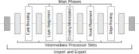

Layered (overview)
By Sören Domrös, August 21, 2025
The layered algorithm or Sugiyama algorithm is in its implementation in ELK divided into five phases with intermediate processing slots: Cycle Breaking, Layer Assignment, Crossing Minimization, Node Placement, and Edge Routing.

Using the occasion of the upcoming ELK 0.11.0 release, I want to shed more light on the ELK Layered algorithm and how to find the correct layout phase to configure.
In the following, I will assume that the layout direction is left-to-right, or speaking in ELK layout options elk.direction: RIGHT since this makes talking about coordinates easier and allows me to use horizontal and vertical as well as left and right without discussion potential alternatives.
Cycle Breaking
The cycle breaking phase (cycleBreaking.strategy) of the ELK layered algorithm makes a graph acyclic by reversing edges such that they go from right-to-left instead of left-to-right creating backward edges. However, in its implementation in ELK, it does a lot more than that since this phase typically also handles constraints that somehow determine the horizontal ordering of connected nodes.
This phase is implemented by the following strategies:
GREEDY(default): Aims to minimize the number of backward edges and uses random decisions on tiesINTERACTIVE: Use the ordering given by the positions of nodes (e.g. from a previous layout run) to determine the direction of edgesMODEL_ORDER: Use the ordering of nodes in the input model to determine the direction of edgesDEPTH_FIRST: Traverse the graph depth-first beginning with the first source in the list of nodes and using the edge order as the depth-first visiting order. All edges that lead back to already visited nodes will be reversedGREEDY_MODEL_ORDER: TheGREEDYapproach but using the model order as a tie-breakerSCC_CONNECTIVITY: Determines the strongly connected components using Tarjan’s algorithm while using the in-out degree to determine edges to reverse, which results in quadratic runtime compared to the other approachesSCC_NODE_TYPE: Same asSCC_CONNECTIVITYbut reverses edges going out of or going to specifically marked nodes using group model orderDFS_NODE_ORDER: Same asDEPTH_FIRSTbut uses the node model order instead of the edge order to traverse the graph depth-first.BFS_NODE_ORDER: Same asDFS_NODE_ORDERbut breadth-first.
Moreover, the following options might constrain the cycle breaking step:
- Partitioning: Activating partitioning and partitions not only determine partitions in the graph but also determine the direction of edges
- Layer constraints: Setting layer constraints to
FIRSTorLASTalso influences the direction of edges to make this possible - Direction priority: Setting
priority.directionmakes it possible to weight the importance of edges being not reversed
Layer Assignment
The layer assignment phase (layering.strategy) assigns each node (and also each edge label, which is essentially only a special kind of node) a vertical layer. I.e., using the acyclic graph created by cycle breaking, it aims to create a minimal width assignment of nodes and edge labels to layers, which may create desired vertical alignment.
This phase supports the following strategies:
NETWORK_SIMPLEX(default): Encodes the layering problem as a network simplex problem as proposed by Gansner et al.LONGEST_PATH: Start from the sinks and greedily assign nodes to layersLONGEST_PATH_SOURCE: Start from the sources and greedily assign nodes to layersCOFFMAN_GRAHAM: Uses a precedence-constraints scheduling approach by Coffman and Graham to find a layer assignment bounded by the number of nodes in a layerINTERACTIVE: Uses previously set positions of nodes to determine non-overlapping vertical layersSTRETCH_WIDTH(Experimental): Similar toLONGEST_PATHbut tries to reduce the maximum number of nodes in a layer. This is based on the work of Nikolov et al.MIN_WIDTH(Experimental): A heuristic to solve the NP-hard minimum-width layering problem while considering dummy nodes create for routing edges. This is based on the work of Tarassov et al.BF_MODEL_ORDER(Experimental): Assign nodes to layers breadth-first based on their model order. This assumes that the cycle breaking was also done by model order.DF_MODEL_ORDER(Experimental): Same asBF_MODEL_ORDERbut depth-first. I must note here that this is not a very efficient solution and thatLONGEST_PATH_SOURCEis typically a better alternative.
Moreover, the following options can be used to constrain, configure, or post-process the layering:
- Partitioning: See partitioning explained above
- Layer constraints: See layer constraints explained above
- Node promotion: Uses Nikolov et al.’s node promotion strategy to achieve a layering with fewer dummy nodes
- Layer splitting: Split a very high layer into multiple uses using layer unzipping.
Crossing Minimization
The crossing minimization phase (crossingMinimization.strategy) determines the vertical ordering of nodes and the relative routes by also ordering the dummy nodes associated with them. Therefore, this phase ensures that the drawing has fewer edge crossings and conforms to relative vertical constraints and also determines the ordering of ports/edges.
It supports the following strategies:
LAYER_SWEEP(default): This strategy uses the barycenter heuristic proposed by Sugiyama et al. to find a crossing minimal ordering for nodes and the ports edges connect toMEDIAN_LAYER_SWEEP: This strategy uses the median heuristic proposed by Di Battista et al. instead of the barycenter heuristicINTERACTIVE: This strategy uses previously calculated node positions to determine the ordering of nodes in a layerNONE: This does no crossing minimization but only executes desired pre- and post-processing steps. It is useful to constrain the order of nodes and edges
This strategy can be constrained as explained in detail in the Layered: Constraining the Model blog post.
Additionally, one can greedily post-process the ordering to reduce edge crossings using the greedy switch heuristic.
Node Placement
The node placement phase (nodePlacement.strategy) determines the concrete y coordinates of nodes since vertical routing segments created during edge routing might change x coordinates later on. Moreover, this phase determine horizontal alignment and centering of nodes on its connections.
Node placement supports the following strategies:
SIMPLE: Center all nodes and edges in their respective layer, separating them by their spacing. This strategy is not intended for a serious use caseINTERACTIVE: Leaves the previously calculatedycoordinates of the nodes untouchedLINEAR_SEGMENTS: Align nodes edges using linear segments and nodes using the pendulum method proposed by Sander. This can be additionally configured by setting the dampening.BRANDES_KOEPF(default): Use Brandes & Köpf’s method for node placement. Per default it orients nodes to the top-left but this can be configured to balance nodes based on their connections.NETWORK_SIMPLEX: Uses a network simplex approach by Gansner et al. to determine node positions.
Notable options to configure this are the following:
- Post compaction: Squishes the whole layout together to save space
- Network simplex node flexibility: Dynamically increase the node height to straighten edges
Edge Routing
ELK layered’s edge routing phases supports different drawing styles and finally determines the x coordinates of nodes and the routes for edges. This can be used to create edge control points for polyline, orthogonal, or spline edge routing.
I hope this helps readers by giving an overview of the different strategies without having to dig through different layers of documentation, or at least helps by highlighting the layout phase that is responsible for a problem.